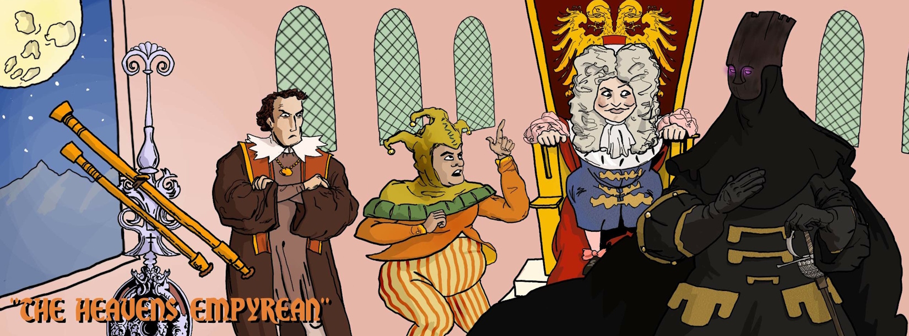

Radio Play – The Heavens Empyrean (2014)
ABOUT
Doctor Vysarius began as an episode of The Spectral Citadel, a weekly radio drama airing on SUNY Purchase’s student radio, WPSR. The Spectral Citadel was an anthology horror-comedy show, and a testament to what a group of weird kids can get away with when no one is paying attention—set loose in a basement recording studio at a state university. The show ran from 2013 to 2016, and was modeled on Night Gallery or The Twilight Zone—with a heavy dose of Blackadder and the Hammer films of the 1960s and 70s, as is heavily in evidence in the episode in question: The Heavens Empyrean.
Now, bring the royal potty hence . . .
{kind=link}

CAST
Written and produced by Steven Glavey
- Matthew DeCostanza . . . Doctor Oswalt Karll Leippoldt
- Margaret Powers . . . Doctor Vallentin Vysarius
- Michael Guardiola . . . Emperor Maximilian II, House of Fumfenhauer
- Troy Schipdam . . . Lord Porkeo
- Steven Glavey . . . Cardinal Athanasius of Portugal / Sir John Whitehook / Page / Andreus
Note by Matthew DeCostanza
In 2013, Troy and I were working at WPSR as off-air station managers when we met Steven and Meg. We quickly approved their pitch to host live radio theatre on Friday nights, because, well, it was a great idea, but I put my finger on the scale for another reason—I was self-interested. I was 19 at the time, and studying drama.
After we approved their show, I jerry-rigged a strange sort of audition tape. I performed a Moondog poem (“Machines were mice and men were lions once upon a time…”) and layered it over some Vivaldi or Rachmaninoff or something. It proved little to nothing about my talent, but it was amusingly strange, and showed that I wanted in. Steven and Meg acquiesced. “The Heavens Empyrean” was one of the first of the several dozen radio shows we did over the next three years. From then on, I was part of The Spectral Citadel.
Like many actors, I listen back to the WPSR recording of “The Heavens Empyrean” with a degree of squirming impatience. I’m focused on mainly one thing: myself. As the astronomer Karll Oswalt Leippoldt, I am very underrehearsed; my reading is halting and awkward; I clearly have a cold. Even so, the presence of my juvenelia cannot take away from the promise inherent to these early Spectral Citadel recordings. Meg’s theme is haunting, bursting with gothic double entendre (“You may lose yourself, mind, body, and spirit…”). Steven’s cultural-intellectual background is vast, pulling not only from horror cinema, but also, with no ostentation, from literature, history, and religion. The piece’s humor can be snappy and offhand (“You have made me very angry guy!” seethes the childlike Emperor Fumfenhauer), or troublingly, dangerously sexual (as in Lord Porkeo’s ditty “My Sue,” an autobiographical piece, I suppose, written after his recent arrest for public masturbation). But the greatest pleasure I took in the early Spectral Citadel episodes is that they are genuine articles of original, dark fantasy–look no further than “The Heavens Empyrean,” in which Leippoldt sees a skyey, nightmare vision of a demonic, sexually engorged goatman through the lens of his telescope, or in the final scene, in which Vysarius’ sorceries rend human and serpent flesh together to create a “gorgon queen,” the horrible aftermath of which we cannot see, but only imagine.
In Ron Perlman’s 2014 memoir, Easy Street (The Hard Way)—the book, by the way, that Steven and Meg gave me for my 21st birthday—he describes the feeling of starring as the hunky lead of 1980s fantasy-soap Beauty and the Beast as being like getting to play Hamlet every night. I know how he feels. Over the years of playing the astromonomers, knights, warlocks, and vigilantes that sprung from Steven’s imagination, I felt not only like a star of the stage, but a bit like Richard Burbage himself, who every season found himself entrusted by his poet with the infinite variety of Hamlet, Macbeth, Romeo, bunchback’d Richard III, and more. When we recorded “The Heavens Empyrean,” my work as a classical actor was actually yet to come. You coulda fooled me.